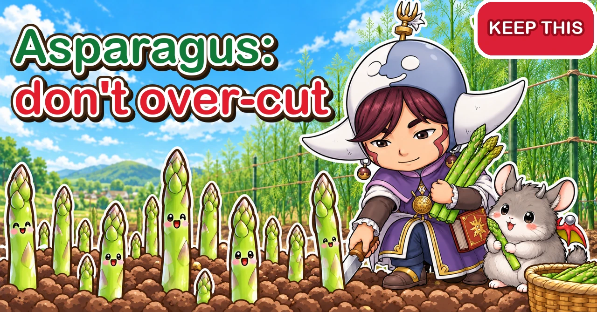
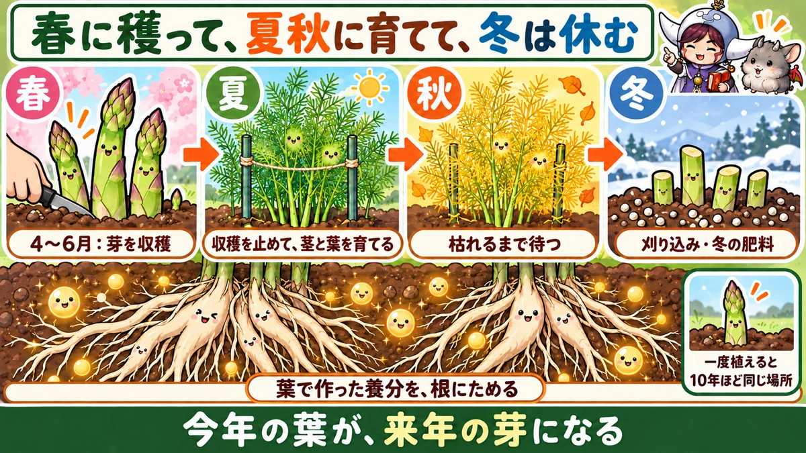
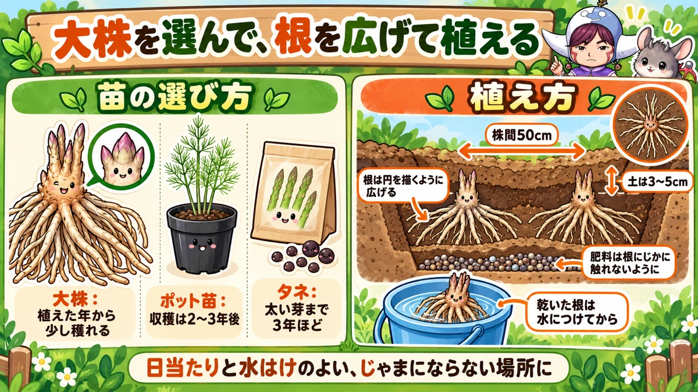
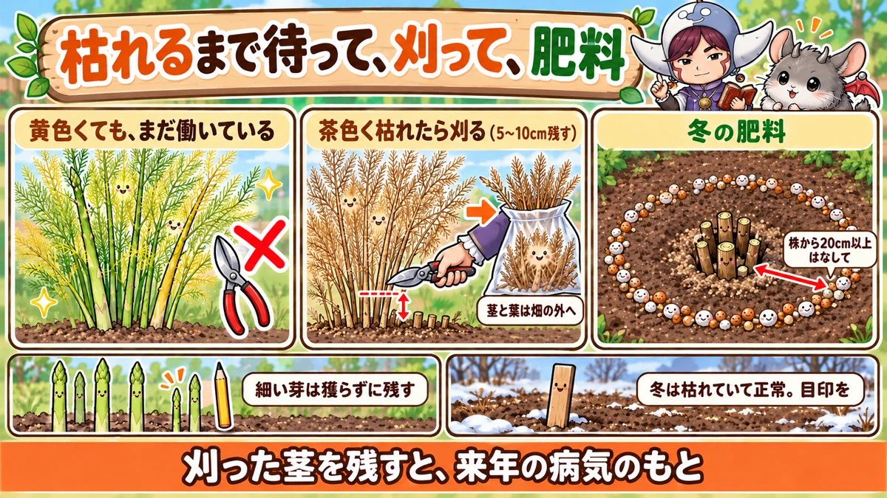

Asparagus: this year's ferns are next year's spears 🌱 Crowns, planting, when to stop cutting, and autumn and winter care

🌱 "Years later, I still only get thin spears."
🌱 "I cut too many in year two, and it barely came back."
🌱 "It died in winter, so I dug it up."
Hello, I'm Eiko. Eight years of growing vegetables organically and without pesticides, and a teaching licence in science.
Fresh-cut asparagus in spring is astonishingly sweet and fragrant — and once planted, it comes up from the same spot every year. One clump in the garden means one more spring treat, year after year.
It works differently from most vegetables, though. The size of next spring's harvest is decided by how well you grew this year's ferns. Here's what to do in each season — including autumn and winter, the time to cut down old ferns, feed established plants, and prepare for planting.
How to use this article. I garden in central Japan, roughly USDA zone 8b–9a. Asparagus is very cold-hardy once dormant; in colder areas, plant in spring.
Basics. Plant: late winter to around your last frost, or in autumn up to around your first frost. Bed: about 32 in (80 cm) wide. Spacing: about 20 in (50 cm). Plant in a 4 in (10 cm) trench with 1–2 in (3–5 cm) of soil over. Cut spears at 8–10 in (20–25 cm). Grow on 8–10 stems per plant. Cut down to 2–4 in (5–10 cm) once brown.

What this diagram says （図解の文字）
- Cut in spring, grow in summer and autumn, rest in winter
- "Spring — Apr–Jun: cut the spears" (central Japan) → "Summer — stop cutting, grow the stems and leaves" → "Autumn — wait until they die back" → "Winter — cut down, winter feed"
- "Food made in the leaves is stored in the roots"
- "Once planted, about 10 years in the same spot"
- "This year's leaves become next year's spears"
① What kind of plant it is
We eat the young shoots pushing up from an underground crown in spring — rather like bamboo shoots. Left to grow, they become tall, airy ferns. Asparagus comes originally from southern Europe to southern Russia and prefers it warm but not too hot.
A perennial — everything follows from that
Tomatoes and cucumbers live and die within a year. Asparagus tops die in winter, but the crown below ground lives on and sends up new shoots every spring.
- Spring spears grow on food stored in the crown
- Spears left to grow become ferns that photosynthesise through summer and autumn and refill the crown
- The more food stored, the more and thicker spears next spring
Understand that, and it's obvious why you mustn't cut every spear, and why you wait for the ferns to die back in autumn.
A ten-year spot
An asparagus bed can crop for about ten years — and that ground is out of use for anything else. Moving it every year cuts the roots and stunts it. So choose:
- Somewhere at the edge, out of the way of other crops
- Sunny — though one account says about three hours of sun a day is enough to grow
- Well-drained — standing water rots the roots
- Somewhere the summer ferns, well over 3 ft (1 m), won't shade other crops
On an allotment you'll give up in two or three years, small plants may never reach full cropping before you leave — choose big crowns, or grow in a container.
Cold: dormant crowns are rarely harmed by winter cold; even where mornings drop below freezing, it comes back in spring.
How many? A mature plant can give from a dozen to around 30 spears in spring — but only a few in the first year. For a few family meals each spring, start with 2–3 plants; at 20 in spacing, three need about 5 ft (1.5 m) of bed.
② Crowns, pot plants or seed
- Crowns: two- or three-year-old plants dug up and sold in winter and spring, with roots spread like octopus legs. More expensive, but you can cut a few spears in the first year. Sold in sizes — bigger costs more and gives thicker spears sooner. A small crown makes thin spears in its first year; leave those to grow
- Pot plants: first-year seedlings, in spring and autumn. Cheap, but full cropping is 2–3 years away
- Seed: cheapest of all, but about three years to spears worth cutting
Choosing crowns: roots that aren't dried and wrinkled (buy them kept damp); lots of thick roots — the stored food in them becomes spring's spears; and several visible bud swellings on top.
For a first try, big crowns are worth it. A few spears in year one keeps you going, and you're less likely to spend years looking at thin ones.
③ Soil: prepare it for ten years
Asparagus roots go deep and wide, and they'll be in that soil for a decade. Once planted, you can't dig deeply round them again, so preparation matters more than for any other crop.
- Dig 12–16 in (30–40 cm) deep
- Add plenty of compost or leaf mould for a crumbly soil that drains and holds moisture
- It dislikes acid soil — add lime (shell lime, for example)
- Base feed with slow-acting fertiliser — chicken manure, bokashi, rice bran
Keep fertiliser off the roots. If you put it in the planting trench, put it at the bottom and cover with 4–8 in (10–20 cm) of soil, so heat and gas from breakdown don't damage the roots. Ideally prepare the bed about a month ahead; if it's last-minute, put the fertiliser deeper and the soil over it thicker. On wet ground, plant in a raised bed — asparagus copes with some dryness, but not with waterlogged roots.

What this diagram says （図解の文字）
- Choose big crowns, plant with the roots spread out
- "Choosing plants": "crowns: a few spears in the year you plant" ／ "pot plants: harvest in 2–3 years" ／ "seed: about 3 years to thick spears"
- "Planting": "50 cm apart" ／ "spread the roots in a circle" ／ "3–5 cm of soil over" ／ "keep fertiliser from touching the roots" ／ "soak dry roots in water first"
- "Somewhere sunny, well drained and out of the way"
④ Planting
- Spring: late winter to around your last frost (later in cold areas)
- Autumn: before the real cold, so it roots in first
- Pot plants can also go in once it's warm in late spring
Crowns are mostly sold from winter to spring, so spring planting is usual. If the roots are dry, soak them in a bucket of water first — some growers leave them half a day.
- Make a trench or hole about 4 in (10 cm) deep in a bed about 32 in (80 cm) wide
- Water it well and let it soak in
- Set the crown down and spread the roots evenly in all directions — from above they should form a circle
- With the roots not overlapping, cover with 1–2 in (3–5 cm) of soil. No need to bury them deep
- Water again
- About 20 in (50 cm) between plants
Why spread the roots? It widens the area new spears come up from. Planted in a bundle, the spears crowd into a small spot and grow poorly.
In cold weather, a layer of straw, leaves or cut grass protects against frost and drying; some growers cover the bed with clear polythene until early spring. Once established, rain does most of the watering — but in a long dry spell in spring or summer, water deeply.
⑤ Cutting spears
In warm weather a spear can shoot up visibly in a single day. Cut at 8–10 in (20–25 cm):
- With scissors or a knife near soil level
- Or bend the spear until it snaps naturally — everything above the snap is tender
Leave it too long and the tip opens and toughens. Once cutting starts, check daily if you can in warm weather.
Leave thin spears
Spears as thin as a pencil or thinner — leave them. They become ferns that store food for thicker spears in future years. Even on old plants, leave thin ones.
When to stop — the most important part
Never keep cutting every spear. Without ferns, the crown can't store food; next year's spears are fewer and thinner, and in bad cases the plant weakens and stops coming up. A common guide:
- First cutting year: about two weeks after spears start, then stop
- Second year: about a month
- Third year on: if the plant is well grown, about two months
After you stop, let every spear grow into fern — about 8–10 stems per plant. Plants from pots or seed: don't cut in the planting year or the next; start in year three.
Summer and autumn spears pop up now and then. On a big plant you can take a few thick ones; on a young plant, let them grow — next year's crop will be bigger.
White asparagus
It isn't a different variety — it's the same asparagus grown without light. Before the spear emerges, mound soil high over it or cover it with a light-proof tube or bag, and cut inside. Any light at all colours the tip.
⑥ Summer care
Don't let the ferns fall. Stems allowed to grow reach well over 3 ft (1 m), with dense feathery foliage, and snap or flop easily. Put several canes of about 5 ft (150 cm) round the plant and run string round them — spreading the stems rather than bunching them. Fallen stems overlap and shade each other; snapped ones lose all the foliage above the break. Late in the season the stems weaken further; netting round the canes doubles as a windbreak and keeps them working right to the end.
Feeding: asparagus is hungry. Feed:
- when you stop cutting in spring (a thank-you feed)
- in late summer to early autumn
- after cutting down in winter
Scatter it in a ring and mix lightly into the surface — at least 8 in (20 cm) from the crown and shallow, so you don't damage emerging spears. Use the rate on the bag.
Weeds and water: pull weeds while small; straw or cut grass round the base keeps weeds down and moisture in. In a dry summer, water deeply morning or evening — but not so much that puddles form on poorly drained ground.
⑦ Autumn: wait until it dies back
As autumn deepens, the ferns turn yellow. Many people cut them down early, thinking they're finished — a waste. While there's any green left, the leaves are still photosynthesising and feeding the crown. The longer they work, the better next spring.
- Mulch the base with straw or cut grass against cold
- Keep the canes and string up against wind
- Don't force a harvest now
Young plants die back first. In central Japan, plants in their first year or two often brown from mid to late autumn, while big old plants can stay green into early winter. Go by the colour of the plant, not the date.

What this diagram says （図解の文字）
- Wait until it dies back, cut it down, then feed
- ✕ "Even yellow, it's still working"
- "Once brown, cut it (leave 5–10 cm)" ／ "take the stems and leaves off the plot"
- "Winter feed" — "at least 20 cm from the plant"
- "Leave thin spears uncut" ／ "Bare in winter is normal. Mark the spot"
- "Cut stems left lying around are next year's disease"
⑧ Winter: cut down and feed
When the ferns are completely brown — in central Japan, from around the first frost into early winter:
- Cut the stems leaving 2–4 in (5–10 cm) above ground
- Remove any stems that slide out with a gentle pull
Take the cut stems off the plot — don't leave them on the bed or in a corner. Asparagus gets a stem blight (stem-rot disease) whose spores overwinter on dead stems and splash onto new ones the next year. Some growers scorch the stubs with a burner — only where nothing nearby can catch fire.
The winter feed
- Dig a shallow ring-shaped groove, or loosen the surface, at least 8 in (20 cm) from the crown
- Scatter chicken manure or bokashi, with compost or leaf mould
- Mix in lightly — don't dig deep enough to hit roots
- Water a little to settle it (not too much)
Fed now, it starts working just as the spears begin in spring. Get it done by the end of the year, or midwinter at the latest.
Bare in winter is normal. Don't dig it up thinking it's dead, or plant something on top — push in a cane to mark the spot. Moving or dividing plants is best done now, while they're dormant: dig up, cutting as few roots as possible, and replant in prepared ground.
⑨ Diseases, pests and berries
Stem blight shows as brownish, elongated spots on the stems and can kill them. It spreads in wet weather. Cut out affected stems early and remove them; clear all stems in winter; avoid overcrowding; and mulch to reduce rain splash.
Insects sometimes eat spring spears or summer foliage — pick them off. Give the dense summer ferns an occasional shake and look between the leaves.
Red berries: asparagus plants are male or female. Females carry small round berries that turn red in autumn. Fallen berries sprout into little asparagus seedlings round the plant; pull them while small, or the bed gets crowded.
⑩ Containers and seed
Containers: as large and deep as possible — 40 litres of compost or more. Plant the same way. Running dry is the main failure: a few forgotten days can kill it. In spring and summer, water well whenever the surface is dry; in winter it uses little water, but don't let it dry right out. Feed at the same three times as in the ground.
From seed: soak the hard seed overnight; sow 5–6 seeds in a larger-than-usual pot in early spring (it makes a year of watering and feeding easier); keep warm and sunny while it's cold, and move outside once it warms up. Plant small pots out in early summer, or grow on in the bigger pot and plant in autumn. Prepare the bed a month ahead, don't cut for the first two years, and start lightly in year three.
⑪ Thin or few spears? Check these
- The plant's age: thin spears in years 1–2 from pots or seed are normal
- Last year's ferns: too many spears cut, so few ferns? Stems fallen or snapped in summer? Cut down while still green? Bone-dry summer? Disease killed the stems early?
- Soil and feeding: years without winter or post-harvest feeding starve it; compacted soil round the plant hampers roots
The cure is a year off. Don't cut at all; let every spear become fern, feed, support the stems, wait for brown. Weak plants often recover. Old, crowded plants can be dug up and divided in winter.
⑫ Where growers disagree, and common mistakes
- Cut in the planting year? With crowns, some take a few; others hold off a year for a bigger crop after. With ground for the long term, hold off or cut only very briefly; on a short-term plot, take a few from year one
- Male or female plants? Males are often said to yield more, since they don't spend energy on berries — yet one producing-region trial found females yielded more. They're hard to tell apart before flowering anyway; with females, just pull the seedlings
- Scorch the stubs? Reduces disease, but needs care with fire — not possible everywhere. Removing the cut stems is the essential part
- Cut autumn spears? A few from big plants, or none to build the plant up. Leave them on young plants
- Cut every spring spear → thin next year. Set a stop date by age
- Cut thin spears → those were next year's ferns
- Cut down while yellow → still storing food. Wait for brown
- Left the cut stems → next year's stem blight
- Dug it up in winter → bare is normal. Mark it
- Years without care → no feeding or mulch and the plant fades
Opened tips mean a late cut — still edible minus the tough part. Purple types exist too, grown the same way; they tend to turn greenish when boiled.
Science bit: the savings account under the soil 🔬
Spear thickness is set by last year's photosynthesis. Below ground are many thick roots storing food, mainly sugars, and spring spears grow on that store. Cutting spears spends it; keep cutting and the balance only falls. Stopping and growing ferns is paying back into the account.
Spears come from an underground stem. Dig up a crown and you'll see thick roots spreading like octopus legs from a creeping underground stem; spears rise all along it. Spreading the roots in a circle at planting gives that stem room. Each year it spreads further and there are more places for spears.
Why they shoot up on warm days. Growth depends heavily on temperature: barely moving in early-spring cold, astonishingly fast once it warms — and stopping dead in a cold snap. If spears are up but not growing, wait for warmer days.
Why white asparagus is white. The green is chlorophyll, which the plant barely makes without light — like bean sprouts or the white part of a leek.
Why clear the cut stems? Many disease spores overwinter on infected plant remains and splash onto new stems with rain. Remove the remains and you remove the start of next year's outbreak.
To sum up
- ✅ About ten years in one spot — sunny, well drained, out of the way
- ✅ Big crowns for a first try; pots or seed take 2–3 years
- ✅ Dig deep; compost, lime, slow fertiliser — not touching the roots
- ✅ Spread the roots in a circle, 1–2 in of soil over
- ✅ Cut at 8–10 in; leave pencil-thin spears
- ✅ Stop on time: 2 weeks, then a month, then about two months
- ✅ 8–10 stems per plant, supported against wind
- ✅ Wait for brown, cut to 2–4 in, take the stems away
- ✅ Feed after cutting down; bare in winter is normal
- ✅ Containers: big, and never let them dry out
Asparagus doesn't give quick results — but once the crown is established, it gives you fresh spears every spring. If you already have plants, let the ferns finish their work, then cut down and feed 🌱
Thank you for reading!